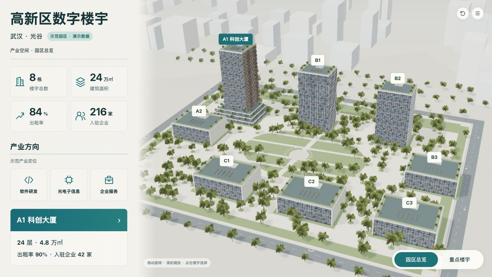
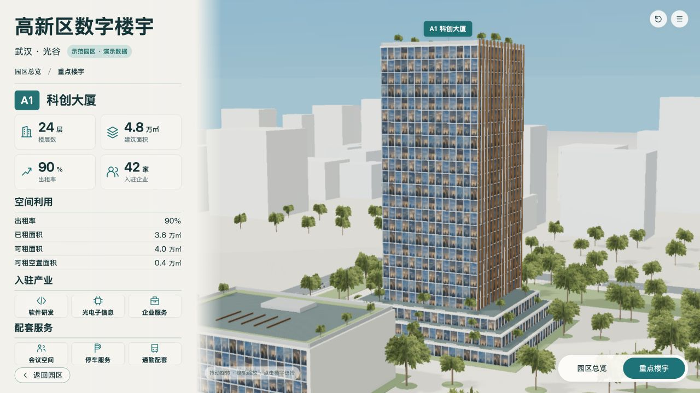

同一B确认基准、固定相机、演示A1；车辆为运行时刻快照，与AI停放位置不作逐车像素匹配。
两图保留原始比例，AI图不具备测绘精度；对照不把AI不可数细节当作工程数据。浏览器截图是实际WebGL画面。



| ID | 预期 | 实际 | 原因假设 | 源修改 | 重建/复验证据 | 结果 | 后续 |
|---|---|---|---|---|---|---|---|
| T-01 | 道路车辆持续行驶 | 18辆双向等距，8m/s绕行；圆弧转弯，切层不中断 | 此前车体合并在静态环境网格内 | Blender独立车体模板，Three实例批次，traffic.js道路派生闭合路线与统一时钟 | traffic-runtime-v12.json；traffic.test.mjs；rebuild-v12-final.json | 实际位置和朝向随时间变化；通过4轮切层连续性与路线检查 | 保留装饰演示属性，不接入交通统计 |
| T-02 | 不扰动原确认构图与主要建筑 | 同一8栋、同一相机；远景随机序列保留 | 移除旧车时随机序列会变化 | 保留原18次景观随机采样；车辆不投静态车影 | 两层v12截图；assets-contract-v12.json | 结构和原材料保持；此前远景简化、窗格重复限制仍在 | 不宣称用户最终视觉验收 |
[
{
"level": "campus",
"baseline": "design/concepts/B-campus-v2.png",
"baselineSha256": "b7256276a9357e0255ac1799e189de000f3c69563e0672624b826acfb76db264",
"actual": "checks/campus-detailed-v12.jpg",
"actualSha256": "1fcf0de7793e833b0aaf6ccbf324ecc3d79634effd7776e346389418f662837b"
},
{
"level": "building",
"baseline": "design/concepts/B-building-v2r1.png",
"baselineSha256": "1aa5b6d94d1b17ae9b7eb815fa59fa75c1f0f44f88a9f2e41045d85aae8f43e4",
"actual": "checks/building-detailed-v12.jpg",
"actualSha256": "3c2034485717b6ed45d1e24f92c2a3abb262d3f2ff5a7d017f244e9d2a0b6589"
}
]